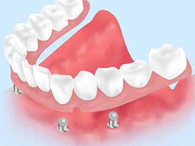
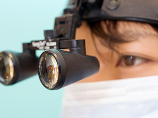
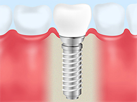
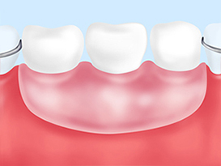
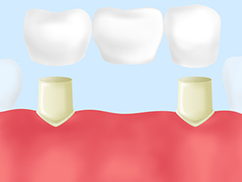
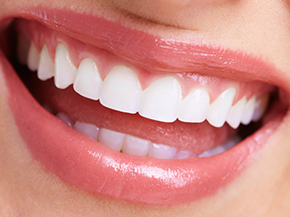
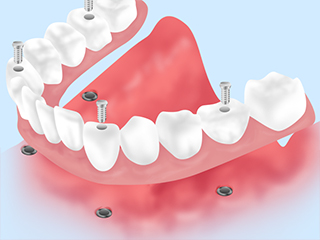

- TOP
- インプラント治療｜インプラント治療内容と料金

名古屋市南区道徳にある家族みんなで通える歯医者【名古屋みなみ歯科・矯正歯科】。こちらでは、当院のインプラント治療の内容と料金をご案内しています。
Priceインプラント治療内容について
名古屋みなみ歯科・矯正歯科のインプラント治療

当院では患者様にとって最適で、安全なインプラント治療をご提供するため、歯科用CTを治療に導入。精度の高い診断を行っています。また診断の際にはi-CATシステムによってインプラント埋入の理想の位置を確認しています。
さらにサージカルガイド、ノーベルガイドといった手術の精度を高めるシステムも採用し、診断通りの埋入手術の実現につなげています。また埋入の際の痛みを軽減できるよう、切削能力が高く精度も高められるピエゾサージェリーを使用しています。
骨の少ない方へ
インプラントを埋入するためには、一定量の骨量が必要です。そのため顎の骨の量が少ない場合、インプラント手術が受けられないことも。しかし当院なら、以下のような方法によって骨が少ない患者様でも治療の可能性を広げることができます。
| PRF | 患者様ご自身の血液から作った「PRF（多血小板フィブリン）」を骨を作る材料に混ぜ、骨造成のスピードを速めます。 |
|---|---|
| サイナスリフト | 上顎洞の底部分を押し上げることで骨の厚みを作っていく方法です。 |
| ソケットリフト | 上顎骨の一部を「シュナイダー膜」と呼ばれる粘膜側にずらすことで、埋入するインプラントの深さを確保していく方法です。 |
インプラント・入れ歯・ブリッジ治療の比較
※表は左右にスクロールして確認することができます。
| インプラント | 入れ歯 | ブリッジ | |
|---|---|---|---|
|  |  |  | |
| メリット |
|
|
|
| デメリット |
|
|
|
現在の入れ歯に不満をお持ちの方へ

インプラントは噛み心地や見た目の面で魅力の多い治療法です。ただ入れ歯、ブリッジといった他の選択肢もあり、それぞれにメリットデメリットがあります。大切なことは、患者様のご要望やご予算、ライフスタイルなどを考慮した上で、もっとも適した方法を選ぶこと。当院ではまず無料カウンセリングでじっくりと患者様のお話をうかがい、最適な治療プランをご提案しています。
多くの歯を失った方のための「All-on-4（オールオンフォー）」

これまでのインプラント治療では、多くの歯を失った場合に8～14本ものインプラントを埋入する必要がありました。しかし、「All-on-4（オールオンフォー）」なら4本のインプラント埋入だけで入れ歯のように人工歯を支えることが可能に。通常の治療法よりも身体的負担も、経済的な負担も抑えることができます。
インプラント治療の費用
| カウンセリング | 無料 |
|---|---|
| インプラントCT撮影 | 15,000円 |
| インプラント埋入（1本） | 250,000円 |
| 上部構造 | 100,000円 |
| インプラント仮歯 | 10,000円 |
| ソケットリフト | 50,000円 |
| サイナスリフト | 100,000円 |